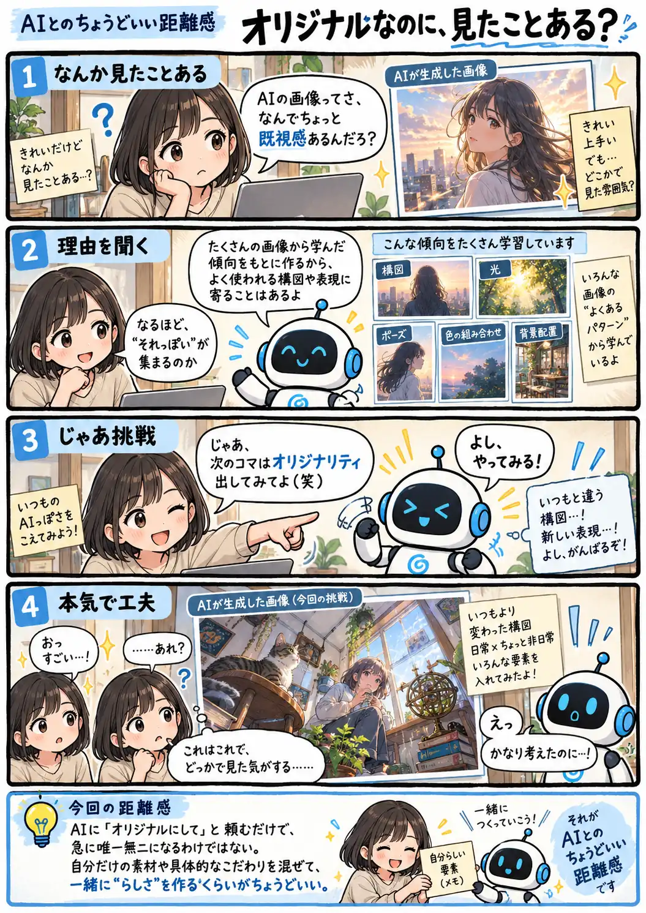

#132
オリジナルなのに、見たことある？
既視感から逃げた先にも、既視感。

メモ
画像生成AIは、学習したたくさんの画像に見られる特徴や組み合わせを手がかりに、新しい画像を作ります。だから「きれいな人物写真」「未来的な街」のような広い頼み方では、構図や光、色使いなどが、よく見かける方向へ寄ることがあります。
「もっとオリジナルに」と伝えるのも一つの方法ですが、自分だけの題材や実体験、意外な組み合わせ、細かなこだわりまで渡した方が、その人らしい方向へ進みやすくなります。AIだけに独創性を丸投げするより、一緒に変なアイデアを持ち寄るくらいが面白いのかもしれません。
今回の距離感
AIに「オリジナルにして」と頼むだけで、急に唯一無二になるわけではない。自分だけの素材や具体的なこだわりを混ぜて、一緒に“らしさ”を作るくらいがちょうどいい。